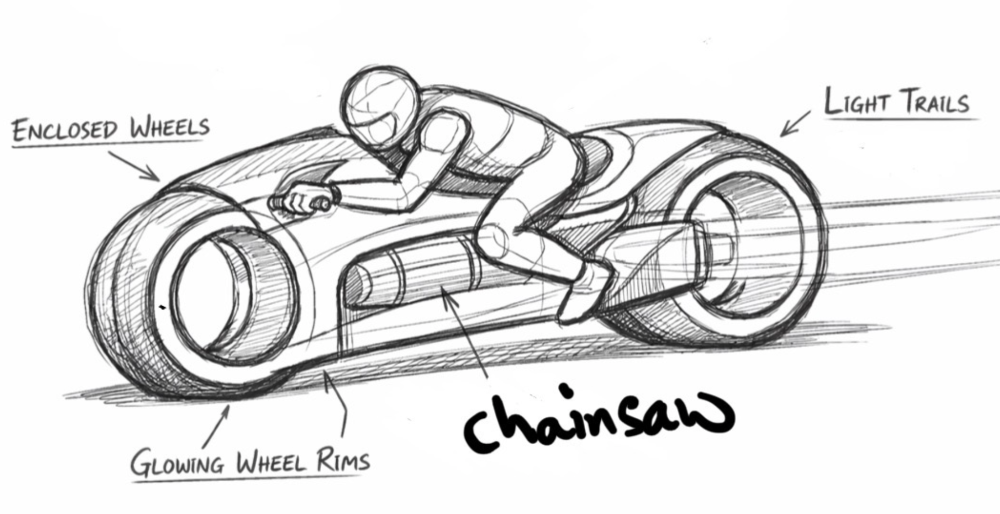
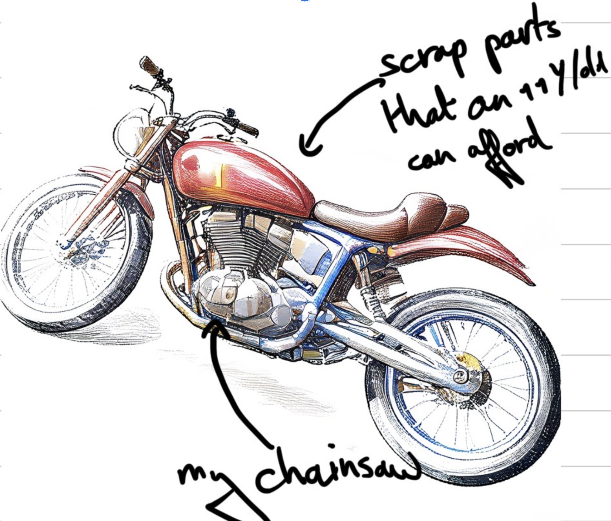
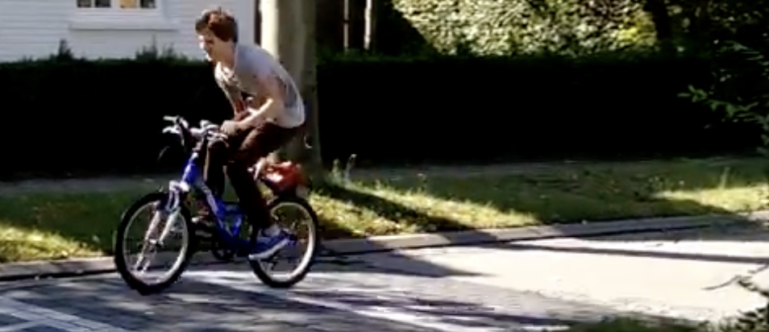

When I was 11 years old, I had a dream: to build a motorized vehicle. The problem? I was 11, had no budget, and definitely didn't have access to a motorcycle engine. The solution? A broken chainsaw from my grandfather's shed and a lot of determination.
The Vision
Like any kid who had just watched Tron, my initial vision was... ambitious. I sketched out a futuristic bike with enclosed wheels, glowing rims, and light trails. The word "chainsaw" was scribbled on the sketch as the power source.

The dream: a Tron-style light cycle. Features included enclosed wheels, glowing rims, and light trails. Powered by... a chainsaw.
Reality set in pretty quickly. After some research (and a reality check from my dad), I revised the design to something more achievable: a cafe racer style bike built from scrap parts.

The revised plan: "scrap parts that an 11 y/d can afford" + "my chainsaw" = a more realistic cafe racer design.
The Build
The final build was even simpler than the cafe racer sketch, but it actually worked. I mounted the chainsaw engine onto a blue mountain bike, connected the drive system to the rear wheel, and added a throttle cable to the handlebars.
Technical Specifications
- Base: Blue mountain bike (hand-me-down)
- Engine: Small 2-stroke chainsaw motor (~25cc)
- Drive: Friction drive against rear tire
- Top Speed: Faster than I should have been going
- Safety Features: None whatsoever
- Budget: Approximately zero euros
The Result
It worked! The bike was loud, smelled like two-stroke exhaust, and vibrated like crazy, but it actually propelled me down the street. My parents were equal parts proud and terrified.

Testing the chainsaw bike in the neighborhood. Helmet? Optional. Fun? Mandatory.
Lessons Learned
Looking back, this project taught me several valuable lessons that still apply to my work today:
- Start with what you have: You don't need perfect equipment to build something cool
- Iterate on your design: The Tron bike became a cafe racer became a mountain bike with a chainsaw strapped to it
- Ship it: A working prototype beats a perfect design that never gets built
- Safety is important: (I learned this one later)
This spirit of building things with whatever's available, iterating quickly, and just making it work has carried through to my current research in robotics and autonomous systems. The tools are more sophisticated now, but the mindset is the same: dream big, start small, and keep building.
What Happened to the Bike?
The chainsaw eventually went back to being a chainsaw (my grandfather needed it), and the bike went back to being a regular bike. But the experience of building something that actually moved under its own power stuck with me and probably had something to do with why I ended up in aerospace engineering and robotics.